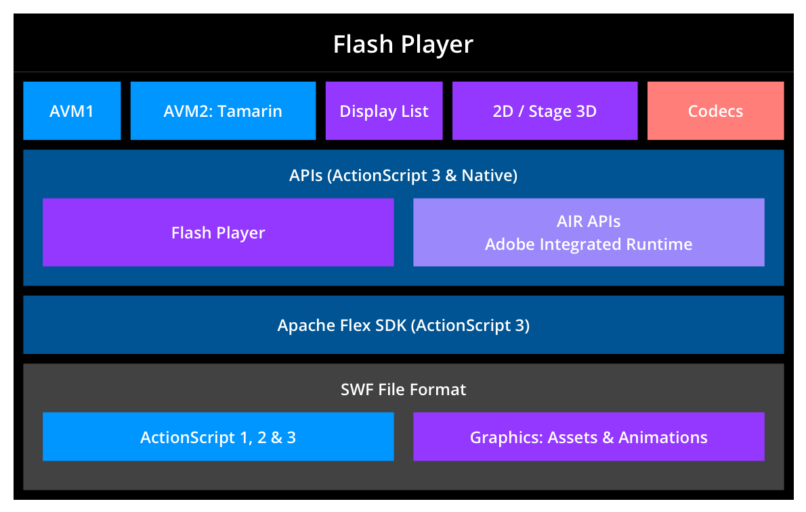
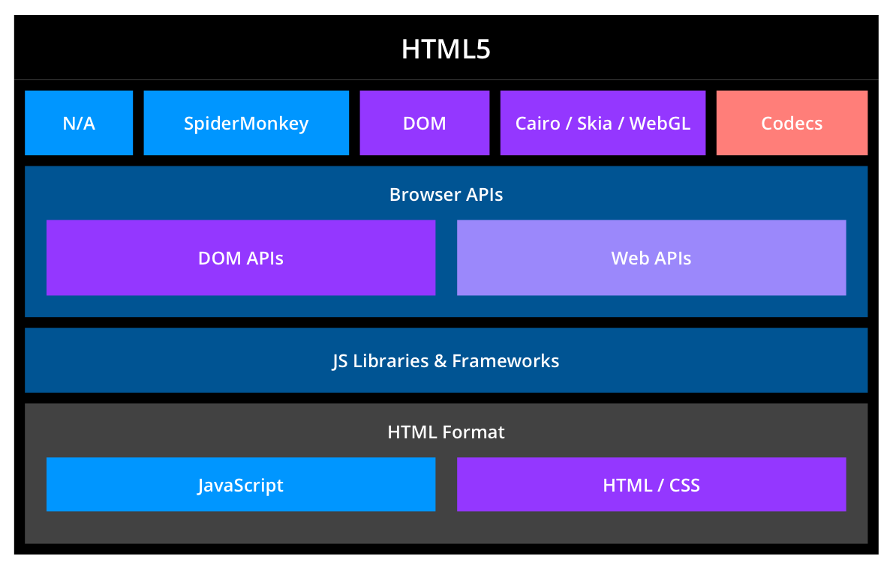
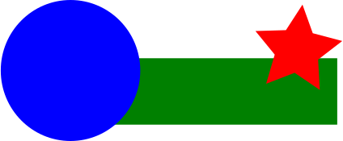
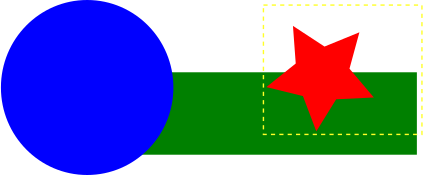

Bring Video Games
to the Web Today
Shumway and asm.js
Mozilla Research
"Our focus is advanced Web platform technology. Specifically, we're out to prove that there are no limits on open technology and that it has the same capabilities and potential that closed technology does. We spend our days finding things that are impossible — and then figuring out how to make them possible."
Shumway
Overview
- Goals
- SWF Format
- Shumway Components
- Use Cases
Goals
- Identify the parts of HTML5 platform that need to suck less
- Make Flash developers more comfortable with the platform by providing reusable libraries
- Build performant VM in JavaScript
- Create SWF player using HTML/JavaScript
- Embed player in the Firefox (and other browsers?)
Prior Art
- Gnash
- Swfdec
- Lightspark
- Gordon
Gordon by tobeytaylor
Why "Shumway"?

SWF Format
- Binary format
- Often compressed using DEFLATE algorithm
- Contains tags that describe timeline, shapes, sound, etc.
- ActionScript is stored in tags as a bytecode
Timeline

ActionScript 1
- Flash 5 introduces ActionScript
- ECMAScript based language
ActionScript 2
- Flash 7 implements ActionScript 2
- Based on proposed ECMAScript 4
- As ActionScript 1, executed by AVM1
ActionScript 3
- Flash 9 includes ActionScript 3
- Runs using AVM2 (open sourced as Tamarin)
- Large class library
- E4X support
Overview of
Flash Player internals

Compare with HTML5 platform
Shumway Components
- Core
- AVM2
- Flash Natives
- AVM1
Shumway Compoments

Shumway Components: Core
- SWF Parser
- Typed Arrays / DataView
- Web Worker
- Promises/A+
- Formats Conversion (fonts, images, etc.)
Shumway Components: Core
- Rendering
- CANVAS
- Clipping to redraw only invalidated regions
- Quadtree to detect affected objects
Clipping

Shumway Components: AVM2
- Bytecode parser
- Runtime
- Interpreter
- Verifier / Type Inference
- Compiler
- Native methods for builtins
Shumway Components:
Flash natives
- JavaScript code for playerglobal natives
- Using existing APIs to simulate Flash, e.g.
- Web Audio or AUDIO for sound
- VIDEO element to playback video
Shumway Components: AVM1
- Action code parser
- Interpreter
- Using AVM2 bytecode to support AS1/AS2 classes
Additional Subprojects
- ECMAScript for XML (E4X)
- RegExp
- Action Message Format (AMF)
- RTMP *
Demo of avm.js
Use Cases
- Use as a web browser add-on
- Embed as IFRAME
- Continue writting code in ActionScript 3
- As a performance test suite / benchmark
Demo: JavaScript uses
SWF resources
- SWF exports symbols as classes
- JavaScript implements native method
- JavaScript handles DOM events
- JavaScript moves Sprites on the stage
Demo: AVM2 without CANVAS
- Loads ABC code from the SWC
- Directly creates AVM2 and runs the code
More Shumway demos
ASM.js
Overview
"An extraordinarily optimizable, low-level subset of JavaScript"
Typical Program
function DiagModule(stdlib) {
"use asm";
var sqrt = stdlib.Math.sqrt;
function square(x) {
x = +x;
return +(x*x);
}
function diag(x, y) {
x = +x;
y = +y;
return +sqrt(square(x) + square(y));
}
return { diag: diag };
}Why it will be faster?
- Helps JavaScript engines to detect types.
- No memory allocation.
"Do I need to write something like?"
function strlen(ptr) { // calculate length of C string
ptr = ptr|0;
var curr = 0;
curr = ptr;
while (MEM8[curr]|0 != 0) {
curr = (curr + 1)|0;
}
return (curr - ptr)|0;
}Tools
C/C++ => LLVM => Emscripten => JavaScript
- Emscripten can emit asm.js output
- asm.js code already works in all modern browsers
- With asm.js-specific optimizations in Firefox Nightly, performance is within 2x of native.
More demos
Resources
The End
http://people.mozilla.com/~ydelendik/presentations/games.html